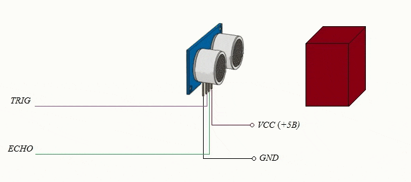
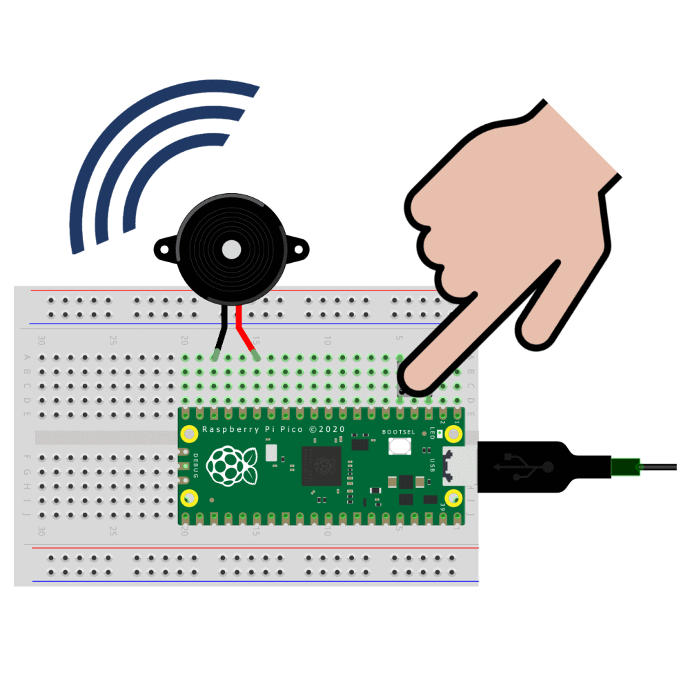
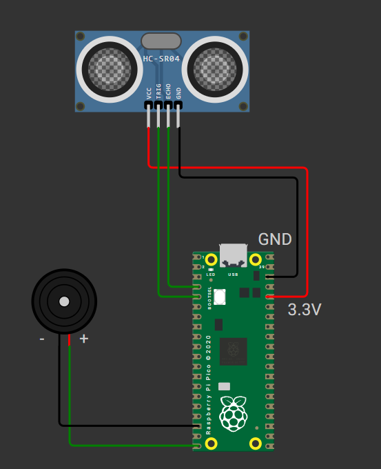

What You Need
- Raspberry Pi Pico / Pico W
- HC-SR04 Ultrasonic Distance Sensor
- Active Buzzer Module
- Breadboard
- Jumper Wires
- Micro-USB Cable
- Computer with Thonny IDE
Step-by-Step Path
🔌 Step 1: How the Ultrasonic Sensor and Buzzer Work
The HC-SR04 ultrasonic sensor measures distance by sending out a short ultrasonic pulse from its "TRIG" pin. When this pulse hits an object, it bounces back and is detected by the "ECHO" pin. The time it takes for the echo to return is used to calculate how far away the object is. This is similar to how bats use echolocation!

The active buzzer is a simple electronic component that makes a sound when you apply voltage to it. In this project, the buzzer will beep when the sensor detects something close. The closer the object, the faster the buzzer will beep, acting as an alert or warning system.

🔗 Step 2: Wire the Circuit
- Connect VCC and GND of the ultrasonic sensor to 3.3V and GND
- Connect TRIG to GPIO pin (e.g., GP3)
- Connect ECHO to GPIO pin (e.g., GP2)
- Connect Buzzer to GPIO (e.g., GP15)


(Show wiring diagram, pinout, and photo references in video)
💻 Step 3: Write the MicroPython Code
- Send a trigger pulse
- Measure echo time
- Calculate distance
- If distance < threshold, turn on the buzzer and beep faster when closer
Mini Project: Proximity Alarm System
🧠 Objective: Trigger a buzzer when an object is detected within 30 cm.
from machine import Pin, time_pulse_us # Import Pin class and time_pulse_us for timing ultrasonic signal
import time # Import time module for delays
# Initialize pins
TRIG = Pin(3, Pin.OUT) # Trigger pin of ultrasonic sensor (GPIO 3)
ECHO = Pin(2, Pin.IN) # Echo pin of ultrasonic sensor (GPIO 2)
buzzer = Pin(15, Pin.OUT) # Buzzer connected to GPIO 15
led = Pin(25, Pin.OUT) # Onboard LED for visual feedback (GPIO 25)
# Function to measure distance using ultrasonic sensor
def get_distance():
TRIG.low() # Ensure trigger is LOW
time.sleep_us(2) # Short delay for stability
TRIG.high() # Send a 10 microsecond HIGH pulse
time.sleep_us(10)
TRIG.low()
# Measure the time duration that ECHO is HIGH (max timeout 30 ms)
pulse_time = time_pulse_us(ECHO, 1, 30000)
# Calculate distance in cm: speed of sound is ~343 m/s → 29.1 µs/cm round-trip
distance_cm = (pulse_time / 2) / 29.1
return distance_cm
# Main loop
while True:
dist = get_distance() # Measure distance
print("Distance:", dist, "cm") # Print it for debugging
if dist < 30: # If object is within 30 cm
if dist < 5:
# If object is very close (<5 cm), buzzer and LED stay ON
buzzer.value(1)
led.value(1)
else:
# For distances between 5–30 cm, blink buzzer and LED faster as object gets closer
delay = max(0.01, dist / 1000) # Delay between buzzes: closer = faster
buzzer.value(1)
led.value(1)
time.sleep(delay)
buzzer.value(0)
led.value(0)
time.sleep(delay)
else:
# If object is far away (>30 cm), turn everything off
buzzer.value(0)
led.value(0)
time.sleep(0.2) # Small pause before next measurement
🧪 Step 4: Upload and Test
- Move your hand close to the sensor and hear the buzzer beep!

🖥️ Result: When an object gets closer than 30 cm, the buzzer sounds off as an alert.
Complete Tutorial (Watch on YouTube)
Quick Recap
- ✅ Read distance using ultrasonic sensor
- ✅ Trigger buzzer if object is too close
- ✅ Real-world input-output response